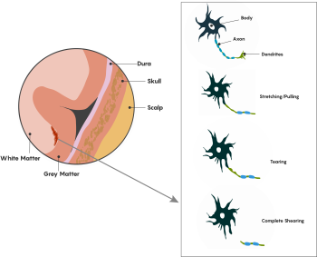
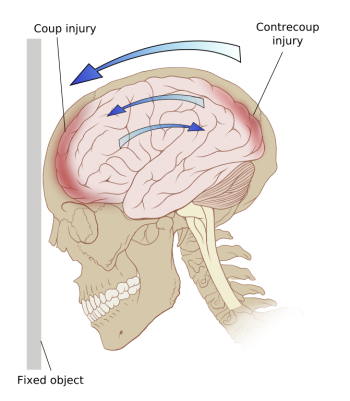
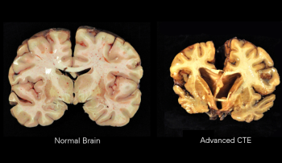
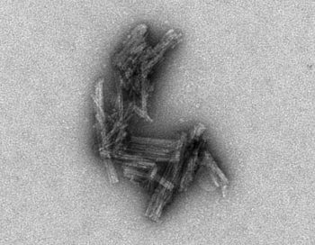
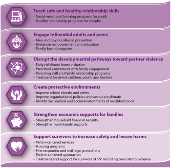

11.4: Traumatic Brain Injury
A traumatic brain injury (TBI) is an injury to the brain caused by an external force. TBIs can be caused by a forceful bump, blow, or jolt to the head or body (a “non-penetrating TBI”), or from an object that pierces the skull and enters the brain (a “penetrating TBI”). TBI is a major cause of death and disability: the United States had over 69,000 TBI-related deaths in 2021, and about 15% of all U.S. high-school students self-reported one or more sports or recreation-related concussions (a type of TBI) within the preceding 12 months (CDC, 2023c).
Some types of TBI can cause temporary or short-term problems with brain function, including problems with how the person thinks, understands, moves, communicates, sleeps, and acts. More serious TBI can lead to severe and permanent disability or death. TBI severity is categorized as mild, moderate, or severe. One common way to categorize severity uses a combination of three factors: 1) the Glasgow Coma scale (a test of eye, verbal, and motor responses); 2) duration of post-traumatic amnesia or memory loss (less than 1 day for mild TBI, more than 7 days for severe TBI); and 3) duration of Loss of Consciousness (0-30 minutes for mild TBI and more than 24 hours for severe TBI) (Departments of Defense and Veterans Affairs, 2008). Most TBIs are mild TBIs or concussions.
How TBI Affects the Brain
Primary effects on the brain include bleeding and tearing forces that injure nerve fibers and cause inflammation, metabolic changes, and brain swelling (NINDS, 2023d). Some examples include:
- Diffuse Axonal Injury, one of the most common types of brain injuries, refers to widespread damage to the myelinated white matter tracts. It usually results from rotational forces (twisting) or sudden forceful stopping that stretches or tears these axon bundles (see Figure 5). Diffuse Axonal Injury can disrupt and break down communication among neurons. It also leads to the release of brain chemicals that can cause further damage.

- Concussion is a type of mild TBI that may be considered a temporary injury to the brain but could take several months to heal. A small minority of individuals report symptoms that persist for years or indefinitely. The individual can suddenly lose consciousness or have a sudden altered state of consciousness. A second concussion closely following the first one causes further damage to the brain, and may result in a slower recovery or the so-called “second impact syndrome” that could lead to permanent damage or even death (which is why concussion-monitoring protocols and sitting out while injured is critical in sports).
- Hematomas are bleeding around the brain caused by a rupture of a blood vessel. In a hematoma, blood can collect in or around the meninges (the protective membranes surrounding the brain) or into the brain itself, damaging the surrounding tissue.
- Contusions are bruising or swelling of the brain that occurs when small blood vessels bleed into brain tissue. Contusions can occur directly under the impact site (a coup injury) or, more often, on the complete opposite side of the brain from the impact (a contrecoup injury). Coup and contrecoup injuries generally occur when the head abruptly decelerates, which causes the brain to hit one side of the skull and then bounce back and hit the other side (such as in a high-speed car crash or in shaken baby syndrome) (Figure 6).

- The blood-brain barrier that protects the central nervous system from toxins and pathogens can break down from a TBI. Once the blood-brain barrier is disrupted, blood and other foreign substances can leak into the space around neurons and trigger a chain reaction that causes brain swelling. It can also trigger harmful inflammation or the release of neurotransmitters that can kill nerve cells when depleted or overexpressed.[1]
Diagnosing and Treating TBIs
All TBIs require immediate assessment by a professional who has experience evaluating head injuries. A neurological exam will test motor, sensory, and speech skills, coordination and balance, cognitive and memory performance, and changes in mood or behavior. An exam might check for a normal pupil response to changes in light and assign a Glasgow Coma Score. In addition, diagnostic brain imaging with a CT or MRI scan can help evaluate the extent of the brain injuries and determine if surgery is needed.
Many factors—including the size, severity, and location of the brain injury—influence how a TBI is treated and how quickly a person might recover. Although brain injury often occurs at the moment of head impact, much damage in a severe TBI develops from secondary injuries that happen days or weeks after the initial trauma. For this reason, people who receive immediate medical attention at a certified trauma center tend to have the best health outcomes.
Some people with a mild TBI, such as concussion, may not require treatment other than rest and over-the-counter pain relievers. For more severe TBIs, immediate treatment focuses on preventing death, stabilizing vital organ function, ensuring proper breathing, and preventing further brain damage. Once the patient is stabilized, a rehabilitation program is employed to help recovery. This may include physical therapy, occupational therapy, speech-language therapy, cognitive or vestibular rehabilitation therapy, and psychological support for emotional well-being. Novel therapies, such as neuroprotective agents and stem cell therapy, are under active research and hold promise for future treatment possibilities.[2]
Chronic Traumatic Encephalopathy (CTE)
A history of experiencing repeated head traumas has been associated with Chronic Traumatic Encephalopathy (CTE). CTE is a progressive neurological disorder associated with symptoms that may include problems thinking, understanding, and communicating; motor disorders (affecting movement); problems with impulse control and depression; and irritability. CTE occurs in those with extraordinary exposure to multiple blows to the head, and symptoms generally start to appear 8-10 years after repeated head injuries (NINDS, 2023d; McKee, 2009). CTE can only be diagnosed after death. After death, a person’s brain is removed, and doctors check whether the person had CTE or another disease, such as Alzheimer’s disease, or no disease at all (CDC, 2019). A brain with CTE is characterized by atrophy (shrinkage) of several brain areas, including the cerebral hemispheres, the medial temporal lobe, the thalamus, and the brain stem, as well as dilation of the ventricles (Figure 7) (McKee 2009). Microscopic examination of brain tissue reveals the pathological signature of CTE–phosphorylated tau protein (p-tau) that builds up in neurons, astrocytes, and cell processes around small blood vessels of the cortex, typically at the depth of cortical sulci (Asken, 2017; McKee, 2009) (Figure 8). The distribution of tau protein in CTE differs from other tau-related disorders, such as Alzheimer’s Disease. But in both tau pathologies, tau buildup and the neurofibrillary tangles formed from tau eventually disrupt brain cells’ ability to communicate with other cells.
Researchers do not know how many people in the United States have CTE. Some evidence suggests rates around 30% for those with histories of repeated head injuries (Asken, 2017). Most studies on CTE have focused on a small group of people who experienced head or brain injuries over many years. People in this group had their brains donated for research, and according to reports from family members, they often had problems with thinking, emotions, or behavior while they were alive (CDC, 2019).[3]


Causes of TBI
Traumatic brain injury has many causes, including falls, vehicle accidents, gunshots, explosions, and blows to the head. Recently attention has surged on brain injury in sports, especially soccer (from repeatedly heading the ball; Lipton et al., 2013), combat sports (e.g., boxing, kickboxing, and mixed martial arts), and contact sports (e.g., ice hockey, professional wrestling, and American football). In National Football League (NFL) players, repeated blows to the head over a career are linked to Traumatic Brain Injury and CTE. These links have been clearly established since a landmark 2006 study by pathologist Bennet Omalu (famously depicted by Will Smith in the film “Concussion”). In a convenience sample of deceased NFL football players who donated their brains for research, 110 of 111 had neuropathological evidence of CTE, suggesting that CTE may be related to playing football [note that participation in the brain-donation program was likely motivated by players’ and their families’ awareness of links between head trauma and CTE; this could bias the sample, and accordingly the authors caution that “estimates of prevalence cannot be concluded or implied from this sample” (Mez et al., 2017)]. In addition, the high-profile suicides of former NFL players Junior Seau, Dave Duerson, and Aaron Hernandez, who had signs of CTE in their brains, thrust the topic of brain injury into the national consciousness.
In spite of extensive attention on professional football, the overall case count of brain injuries in NFL players (~hundreds per year) is dwarfed by the number of brain injuries in other domains, such as the military (~thousands per year) or from intimate partner violence (~millions per year) (Hillstrom, 2022). In the next section, we turn to Dr. Eve Valera, a professor at Harvard Medical School and expert on brain injury in intimate partner violence, to discuss this less-recognized and under-studied epidemic.
Traumatic Brain Injury from Intimate Partner Violence – By Prof. Eve Valera
Harvard Medical School and Massachusetts General Hospital
Content Notice – This section describes some possible effects on the brain from Intimate Partner Violence or Domestic Violence. The content may be distressing, especially for those who have been directly or indirectly affected by violence.
If you or someone you know has been affected, support resources are available, for example, through your university’s counseling center or various health agencies. In the U.S., the National Domestic Violence Hotline is available 24/7; Text LOVEIS to 22522, call 1-800-799-7233, or visit https://www.thehotline.org/get-help/ . In Canada, services can be found at: https://www.canada.ca/en/public-health/services/health-promotion/stop-family-violence/services.html
Intimate Partner Violence (IPV) is any violence perpetrated by a current or former partner, spouse, significant other, girlfriend, or boyfriend with whom one has had an intimate relationship. Though the term domestic violence is often used interchangeably with IPV, domestic violence is broader in scope and also includes child abuse, elder abuse, and abuse from a child to a parent. IPV does not need to occur within the home and can occur in the context of a relationship of any length.
Globally, approximately one in three women experience physical or sexual violence in their lifetime (García-Moreno et al., 2013). Women in peak reproductive age groups—18 to 24-year-olds, followed by 25 to 34-year-olds—experience the highest rates of IPV (Catalano, 2012). Furthermore, people from groups that are and have been marginalized, such as people from racial and ethnic minority groups or LGBTQ+ individuals, are at higher risk for more abuse and/or worse consequences (CDC, 2022).
IPV can take many forms, including physical, psychological, and sexual abuse. When considering physical abuse, 80-90% of injuries are to the head, face, and neck, with women having their heads punched, slapped, kicked, and slammed against other objects. These behaviors can result in traumatic brain injuries (TBIs) in which external forces result in alterations in brain function. Although women sustain TBIs of all severities, the majority of TBIs are concussions, which are on the milder end of the TBI spectrum.
Though limited, data show that IPV-related brain injuries are associated with negative emotional, cognitive, and neural outcomes. For example, women with higher brain injury scores (based on number, recency, and severity of brain injuries) performed worse on tests of memory, learning, and cognitive flexibility than women with lower brain injury scores. Similarly, women with higher brain injury scores also tended to have higher levels of depression, worry, anxiety, general distress, and PTSD symptomatology (Valera & Berenbaum, 2003). Higher brain injury scores and more IPV-related brain injuries were also associated with measures of functional and structural connectivity within the brain analogous to those occurring in people who sustained brain injuries from accidents or sports (Valera & Kucyi, 2017; Valera et al., 2019).
Strangulation is another form of IPV and can be defined as “sustained impairment of air or blood flow through the neck as a result of external pressure” (Armstrong & Strack, 2016). This can lead to alterations (including losses) in consciousness. Strangulation-related alterations in consciousness (AIC) can result in a strangulation-related acquired brain injury. As such, when considering injuries to the brain from IPV, it is important to consider both TBIs and strangulation-related brain injuries or what can be considered “concussion+”. In a study on the effects of strangulation-related AICs, we found that women who sustained strangulation-related AICs performed more poorly on tests of working and long-term memory and had higher levels of depression and PTSD symptomatology (Valera et al., 2022). Furthermore, there’s also been an alarming rise in consensual “rough sex” among young adults, particularly sexual strangulation or choking, which can damage the brain (Herbenick et al., 2023; Orenstein, 2024).[4]
Preventing intimate partner violence. Several factors may affect the prevalence and risk of intimate partner violence. To prevent intimate partner violence, we must understand and address the factors that put people at risk and protect them from violence. Promoting healthy, respectful, and nonviolent relationships and communities can help reduce the occurrence of IPV. For example, school curricula with courses on healthy relationships and communication are crucial. Such efforts are critical to prevent the harmful and long-lasting effects of IPV on individuals, families, and communities (CDC, 2022). See Figure 9 for ways to address and prevent intimate partner violence.[5]

Media Attributions
- Diffuse Axonal Injury © eCampus Ontario
- Contrecoup © Wikimedia
- Chronic traumatic encephalopathy © Wikimedia is licensed under a CC BY-SA (Attribution ShareAlike) license
- Electron Micrograph of Tau Clusters © NIH is licensed under a Public Domain license
- How can we stop ipv © CDC is licensed under a Public Domain license


- This section contains material adapted from: National Institute of Neurological Disorders and Stroke (NINDS) (2023d). Traumatic Brain Injury (TBI). https://www.ninds.nih.gov/health-information/disorders/traumatic-brain-injury-tbi Public Domain. ↵
- This section contains material adapted from: National Institute of Neurological Disorders and Stroke (NINDS) (2023d). Traumatic Brain Injury (TBI). https://www.ninds.nih.gov/health-information/disorders/traumatic-brain-injury-tbi Public Domain. ↵
- This section contains material adapted from: National Institute of Neurological Disorders and Stroke (NINDS) (2023d). Traumatic Brain Injury (TBI). https://www.ninds.nih.gov/health-information/disorders/traumatic-brain-injury-tbi Public Domain. ↵
- Additional Reading: Orenstein, P. (2024, April 12). The Troubling Trend in Teenage Sex. New York Times. https://www.nytimes.com/2024/04/12/opinion/choking-teen-sex-brain-damage.html. Hillstrom, C. (2022, March 1). The Hidden Epidemic of Brain Injuries From Domestic Violence. New York Times. https://www.nytimes.com/2022/03/01/magazine/brain-trauma-domestic-violence.html ↵
- This section contains material adapted from: Center for Disease Control and Prevention (CDC) (2022). Fast Facts: Preventing Intimate Partner Violence https://www.cdc.gov/violenceprevention/intimatepartnerviolence/fastfact.html Public Domain ↵
A brain injury that occurs under the site of impact (coup) and on the side opposite the impact due to the brain moving inside the skull (contrecoup)
A brain injury that occurs under the site of impact (coup) and on the side opposite the impact due to the brain moving inside the skull (contrecoup)